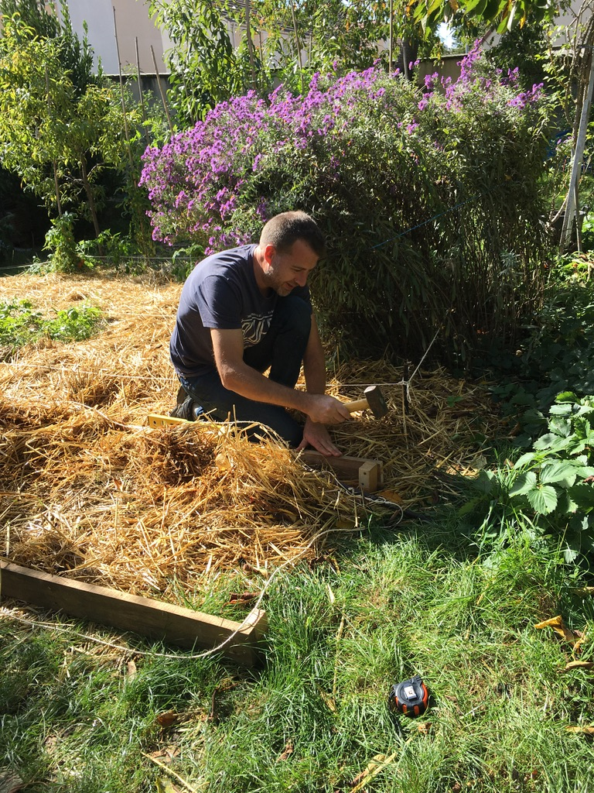

A la fois notre lieu de vie familial et notre lieu de travail, notre tiers-lieu est un espace unique, partagé, intimiste et convivial.
Notre tiers-lieu est l'incarnation des valeurs que nous partageons avec vous autour de 3 thèmes principaux :
1
L'alimentation
2
L'environnement
3
Le Bien-Être
Fidèle à sa définition de tiers-lieu, la Maison de Sylvain se construit pour permettre à chacun et collectivement de développer son pouvoir d'agir en stimulant la coopération locale.
Le Tiers-Lieu nourricier :
l'engagement du collectif pour réapprendre ensemble
Sur des horaires définis, nous partageons notre jardin et notre maison pour l'ouvrir à tous, dans un respect mutuel. Le but de la Maison vise alors le développement de pratiques d'ouverture et d'échange favorables à l'épanouissement personnel.
Nous avons vocation à créer du lien en nous réunissant, diffuser la connaissance par le partage et expérimenter avec des ateliers ludiques.
Engagé dans la transition agroécologique du territoire et dans le changement des pratiques alimentaires, notre tiers-lieu vous permet de comprendre et d'expérimenter les défis qui nous attendent sur ces thématiques.

Passez à l'action, nous sommes là pour vous guider et vous accompagner !